Aims of Timeline
Each traces key moments of Irish–Indigenous connection, beginning with the 1847 Choctaw Nation donation during the Great Famine and extending into modern memorials, cultural exchanges, and acts of reciprocal support. These events demonstrate that solidarity is not isolated but ongoing, shaped through memory, commemoration, and cultural exchange over time.
However, they cannot fully represent the emotional depth, oral histories, and lived experiences behind these events. It should be understood as a starting point for interpretation rather than a complete historical record.
Early Irish Settlement on Indigenous Lands
Irish settlers were among those who arrived in the United States through regions that were historically Indigenous lands. Some of these settlers lived in close proximity to tribes and interacted through marriages, trade, and shared communities.

Map of colonial settlement overlapping Indigenous lands. Source: Library of Congress
Acts of Union
The Acts of Union merged the Kingdoms of Great Britain and Ireland to create the United Kingdom of Great Britain and Ireland. The act dissolved the Irish Parliament and brought Ireland under direct rule from Westminster.
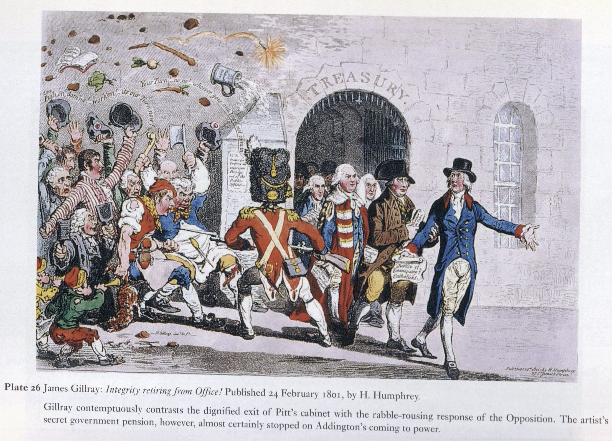
Political cartoon of the Acts of Union. Source: British Library
Treaty of Dancing Rabbit Creek
The Choctaw Nation signed the Treaty of Dancing Rabbit Creek with the United States, ceding their traditional lands in Mississippi. They will be given new land in the Indian Territory. Daniel McCurtain, an Irish immigrant who had later married a Choctaw woman, is present. His descendants would later become chiefs of the Choctaw nation
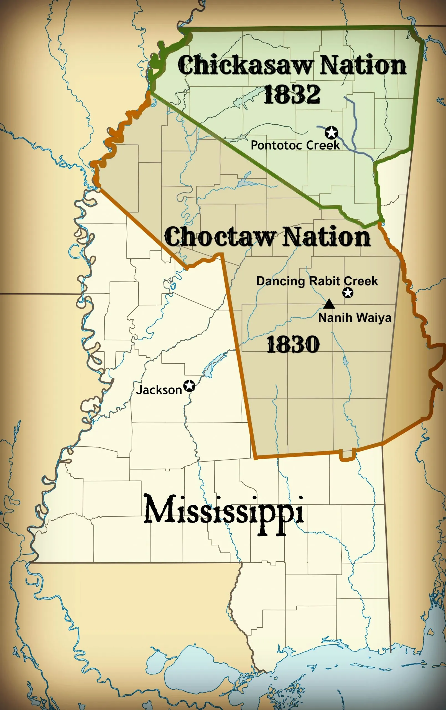
Location of Choctaw Nation vs. the formation of the state of Mississippi Source: U.S. National Archives
Trail of Tears
The forced relocation of Indigenous nations, including the Choctaw, from their ancestral lands.

Map showing routes of forced removal during the Trail of Tears. Source: Library of Congress
Great Irish Famine
Crops begin to fail in Ireland due to an infestation of P. infestans. The system of absentee landlordism and single-crop dependence add to the impact of what would become known as the Great Famine. Many assumed the famine was divine judgement or the Irish's fault. The famine would greatly define Ireland, with one million dying from starvation or malnutrition, producing 2 million refugees, leading to a rise in Irish nationalism and a campaign for independence, and forming a population that still has not recovered today.
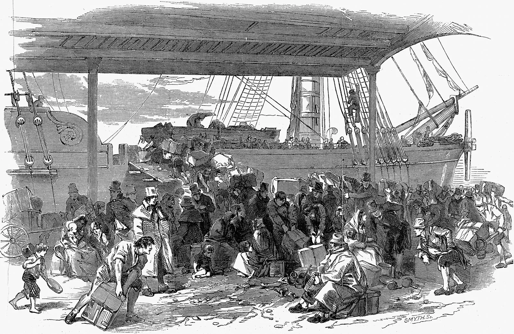
Illustration of famine conditions in Ireland, 1840s. Source: British Library
The Choctaw Donation
The Choctaw Nation, recently displaced by the Trail of Tears, raised $170 in funds (over $6,000 today) to support Irish victims of the Great Famine. The donation was sent to the town of Midleton in County Cork. This act of generosity became a symbol of transatlantic solidarity.

Representation of the Choctaw Nation's aid in the 19th century. Source: Choctaw Nation Official Site
Missionary Contact
Irish missionaries traveled to Indigenous communities in hopes of converting them to Catholicism, marking early religious and cultural contact between Irish immigrant groups and Native nations in North America.
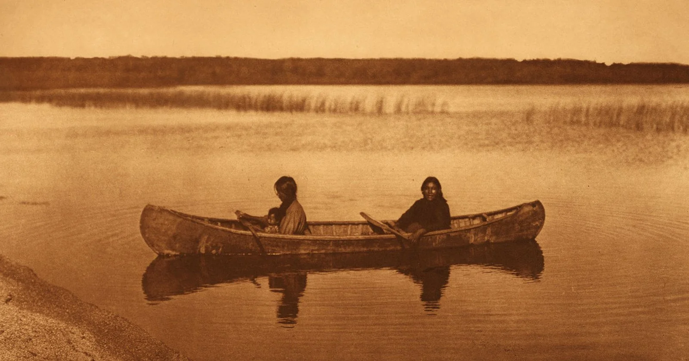
Photograph taken during Catholic missionary activity among Indigenous communities. Source: Digital Public Library of America
American Civil War
During the American Civil War, conflict in the West continued over land as regular army units became involved. Native nations were divided in their allegiances, resulting in loss of life, displacement, and weakened tribal sovereignty. Around 200,000 Irish-born soldiers fought in the Civil War, with a large majority serving in the Union Army.
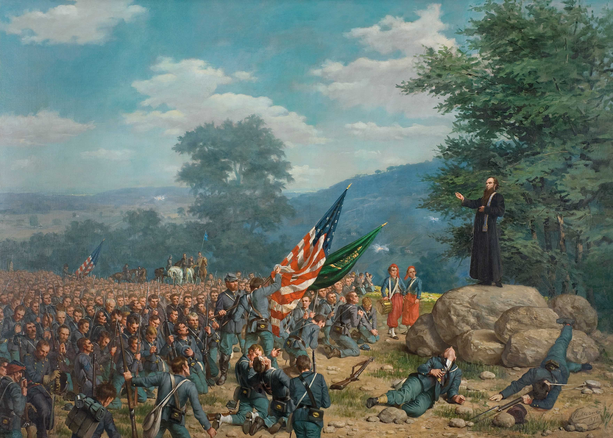
Depiction of Irish Brigade soldiers and pastors during the Civil War. Source: Library of Congress
Cross-Cultural Correspondence
Irish immigrant communities and Indigenous leaders corresponded about aid initiatives and advocacy, sharing strategies to support vulnerable populations. They exchanged songs, stories, and crafts, preserving traditions and creating hybrid cultural expressions.

19th-century correspondence between communities. Source: Digital Public Library of America
James Mooney’s Ethnographic Work
James Mooney studied Native American tribes, recording oral histories and contributing to cultural preservation efforts. His fieldwork with the Cherokee included learning language, documenting sacred narratives, rituals, and traditions. He treated Native culture as legitimate and later studied peyote religion, which brought him into conflict with U.S. government policy. Proud of his Irish roots, he served as president of the Gaelic Society of Washington, D.C., and remains a major figure in ethnology and anthropology.

Ethnographer James Mooney during his documentation of Indigenous cultures. Source: Smithsonian Institution
Éamon de Valera Honored
Éamon de Valera was adopted as an honorary chieftain of the Ojibwe while touring the United States to raise funds for Irish independence. He was given the name “Dressing Feather” to symbolize solidarity between Irish and Native American struggles.
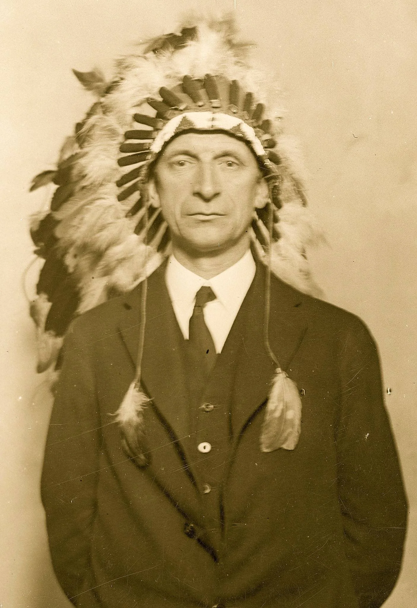
Éamon de Valera during his U.S. tour when he was honored. Source: National Library of Ireland
Famine Walk Commemoration
Choctaw leaders visited County Mayo, Ireland, to participate in the first annual “Famine Walk,” which reenacts the journey of starving Irish tenants during the Great Famine, symbolizing shared memory and solidarity.
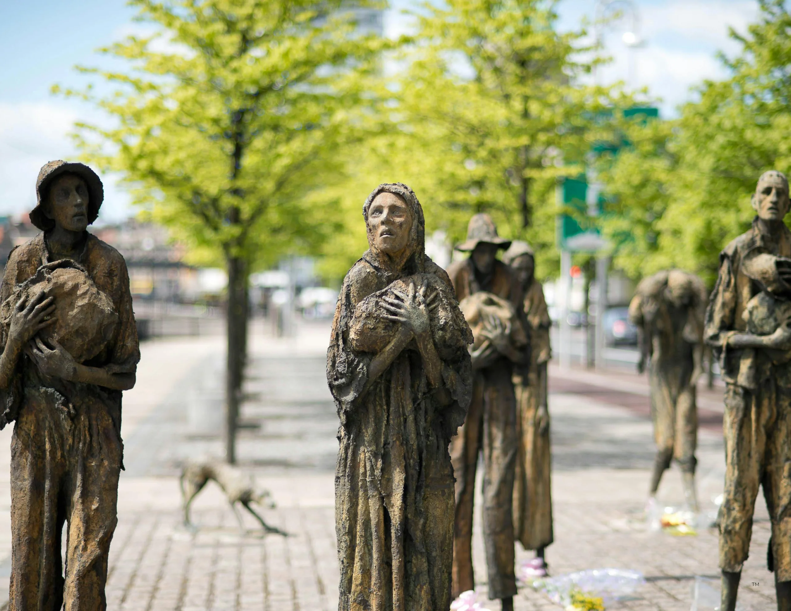
Monument depicting the famine and often used in Famine Walk commemoration. Source: National Museum of Ireland
Choctaw Nation Visit
Led by Irish broadcaster Donncha O’Dulaing, Irish participants visited the Choctaw Nation and commemorated the Trail of Tears by trekking from Mississippi to Oklahoma in an act of remembrance and solidarity.
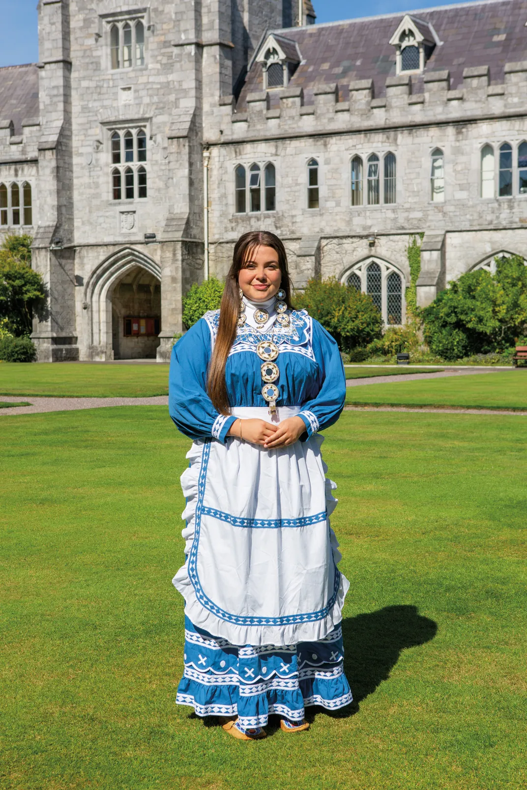
Choctaw delegation visiting Ireland. Source: Choctaw Nation
Dublin Memorial Plaque
A plaque was unveiled at the Mansion House, official residence of the Lord Mayor of Dublin, commemorating the Choctaw Nation’s aid to Ireland during the Great Famine.

Memorial plaque honoring Choctaw donation. Source: Dublin City Council
Presidential Visit to Choctaw Nation
Irish President Mary Robinson visited the Choctaw Nation headquarters, thanking them in the Choctaw language for their historic generosity. She was also made an honorary chief, strengthening symbolic ties between the two communities.
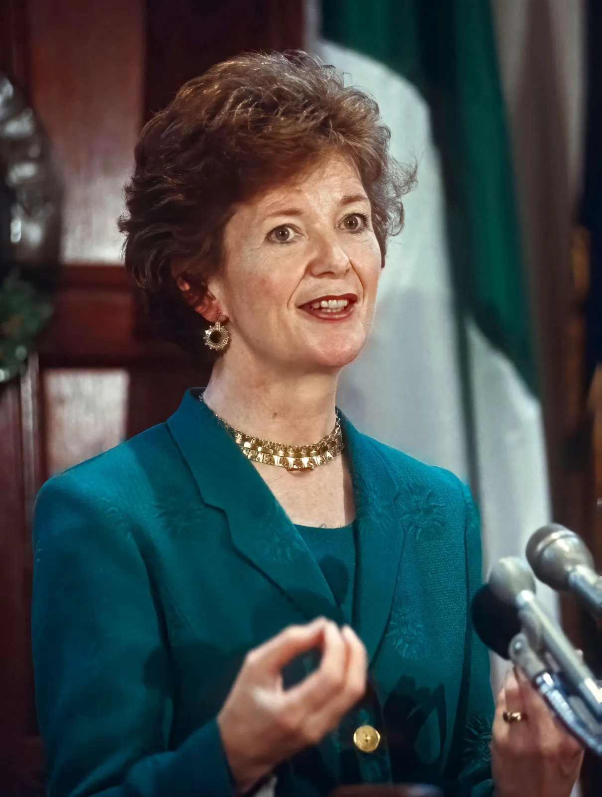
Irish President Mary Robinson in the 1990s. Source: Office of the President of Ireland
Kindred Spirits Sculpture
Midleton, Ireland monument honoring Choctaw generosity and transatlantic friendship.
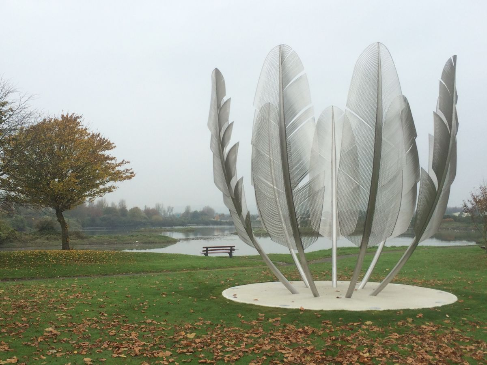
“Kindred Spirits” sculpture in Midleton, Ireland honoring Choctaw generosity. Source: Cork County Council
Irish–Choctaw Scholarship Initiative
Irish Prime Minister Leo Varadkar visited the Choctaw Nation headquarters to celebrate contemporary Irish–Choctaw ties. During the visit, he announced a new scholarship program designed to enable Choctaw students to study in Ireland, strengthening educational and cultural exchange between the two communities.
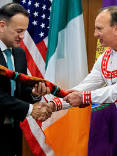
Varadkar visiting Choctaw Nation. Source: Government of Ireland
Pandemic Solidarity Fund
Amid the COVID-19 pandemic, Irish donors raised over $3 million to support the Navajo and Hopi Nations. The effort was explicitly inspired by the historic Choctaw donation to Ireland during the Great Famine, continuing a long tradition of transatlantic solidarity and mutual aid.
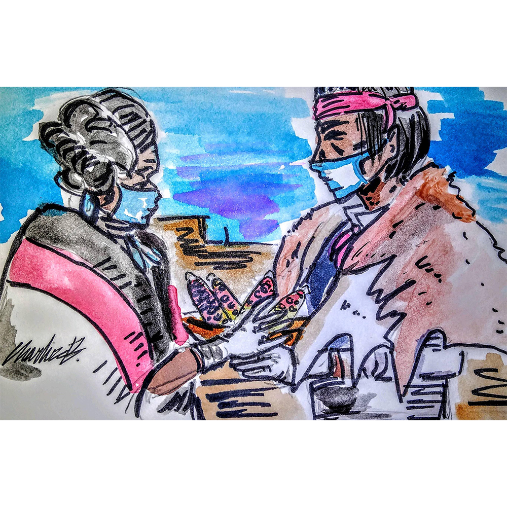
Drawing made depicting relief efforts during COVID-19 in Navajo Nation. Source: Navajo Nation Government
Eternal Heart Monument
The Choctaw Nation unveiled a companion monument titled “Eternal Heart” in Tuskahoma, Oklahoma. The monument celebrates the enduring friendship between the Choctaw and Irish people and commemorates their shared history of compassion and support.

Eternal Heart monument in Oklahoma. Source: Choctaw Nation
Navajo and Hopi Gift to Ireland
The Navajo and Hopi Nations presented a hand-woven rug to Irish representatives as a symbol of gratitude for pandemic-era support. The gift honored the 2020 relief efforts and the enduring connection that began with the Choctaw Nation’s donation in 1847.
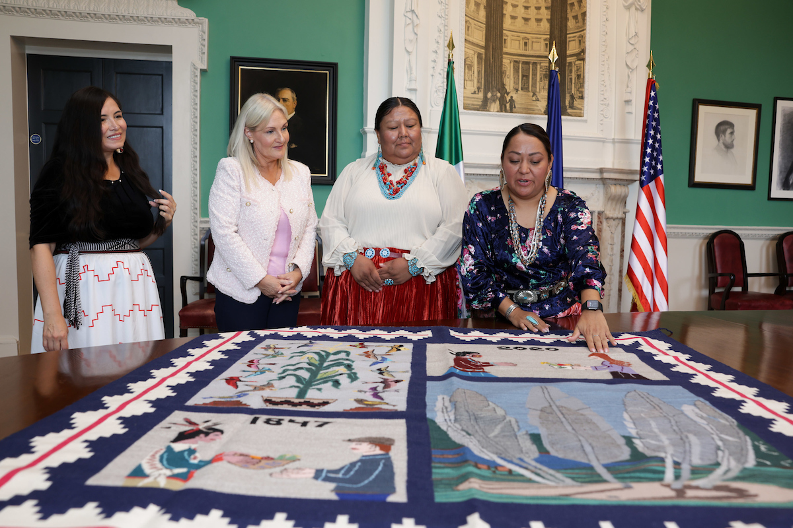
Handwoven Navajo rug symbolizing solidarity. Source: Navajo Nation